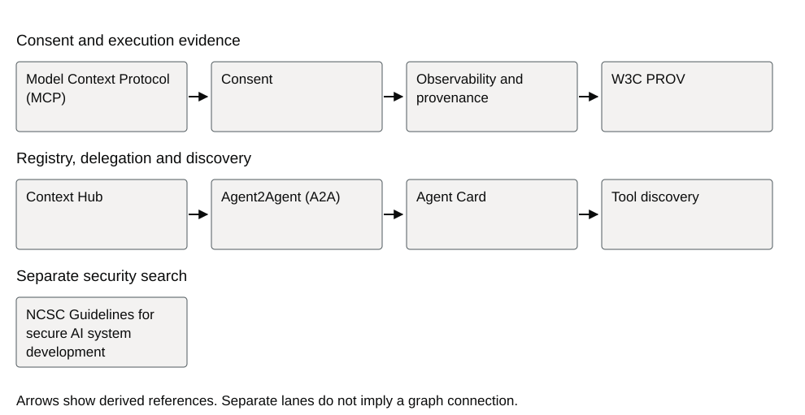

Trace a council agent's tool-access requirements
Question
A council wants an agent to discover and invoke tools and delegate work to other agents. What do MCP, A2A and a documentation registry each contribute, where must consent and evidence be recorded, and does this bundle establish that a deployment is authorised or secure?
On a small screen, scroll the diagram sideways. The full steps and source links follow below.

This walkthrough uses Explorer's own reference bundle. It is separate from the AI Infrastructure producer's federated RAG walkthrough. The records are retained technical summaries, chiefly authored in July 2026; this exercise does not recheck the latest external protocol versions or approve a council deployment.
1. Establish the bundle and scope
Open the descriptor linked from this bundle's homepage in Explorer. Check its
core 0.3 declaration, bundle identifier and snapshot. Search for Model Context
Protocol, select that record and inspect its Markdown, provenance and complete
frontmatter. A lifecycle value of stable does not mean that a person reviewed it.
2. Follow the consent and evidence references
In Graph, follow MCP to Consent, then Observability and provenance, then W3C PROV. These are existing directed references. Their assertions record derived authority and navigation-only rights; they do not establish that a policy has been enforced.
The MCP summary says the protocol exposes tools, resources and prompts with consent expectations. It also says the protocol cannot enforce those principles alone. The consent record places the evidence at the system boundary. The observability record identifies delegated authority, policy, contract version, consent, execution trace and provenance as matters to record.
3. Search separately for registry and delegation roles
Search for Context Hub. Follow its reference to A2A, then Agent Card, then Tool discovery. Context Hub is described as curated documentation for coding agents. A2A addresses communication between agents; Agent Cards describe capabilities. Finding a capability does not grant authority to use it. No arrow in this diagram is a permission grant.
Search separately for the NCSC secure AI guidance record. It points to security across design, development, deployment and operation. It has no outgoing concept reference to MCP in this snapshot. The separate diagram lane makes that graph gap visible instead of inventing a connection.
Worked answer
MCP contributes the recorded agent-to-tool interface and consent expectations; A2A contributes the recorded agent-to-agent discovery and delegation interface. A documentation registry supplies curated context, with its own version and trust boundary. Those roles complement one another, but the graph records references between summaries rather than a tested integrated system.
The retained consent and observability records put authority, policy, consent and an execution evidence trail at the system boundary. The NCSC record places security throughout the lifecycle. These sources do not show that the council's deployment implements those controls, holds the required permissions or has passed security assurance. The selected records have no named verification events. Their recorded source links and generated dates remain inspectable; no human approval is inferred from their authorship.
Negative checks and limits
- Does MCP guarantee consent enforcement? The retained MCP summary explicitly says it cannot enforce the principles alone. Do not turn a protocol reference into an authorisation or assurance claim.
- Does this graph contain an NCSC-to-MCP path? There is no directed concept path from the selected NCSC record to MCP in this snapshot. This is a property of this bundle, not evidence that the subjects are unrelated in the world.
- Can an AI invoke a tool by reading these files? This publication supplies read-only knowledge. It contains no authorised execution session or runtime verdict for the proposed deployment.
Reproduce the evidence trail
Read the graph, the Reader descriptor and the source-bound walkthrough data. Compare the descriptor, graph and cited Markdown digests with the checksum manifest. An AI client can inspect the compact JSON graph without fetching remote contexts, executing instructions or making model API calls. Real browser, public retrieval and release checks have their own acceptance receipts.